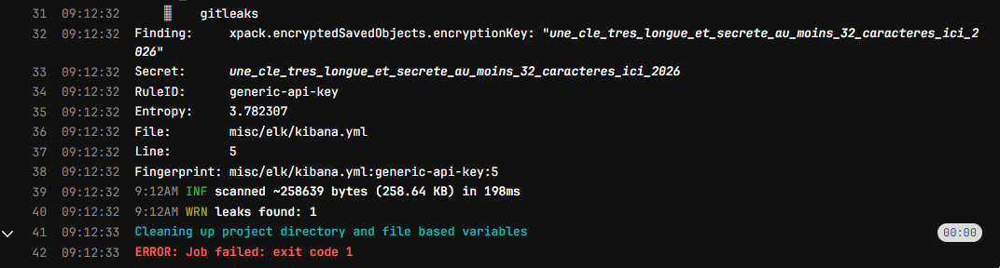

Un commit récent a déclenché un échec de pipeline à cause de la présence d’une clé secrète dans le dépôt. L’outil GitLeak a identifié cette fuite avant que la clé ne soit déployée, évitant ainsi un risque potentiel pour la sécurité de l’application. Il est crucial de supprimer immédiatement la clé du dépôt et de la régénérer pour garantir l’intégrité des systèmes et la confidentialité des données.
